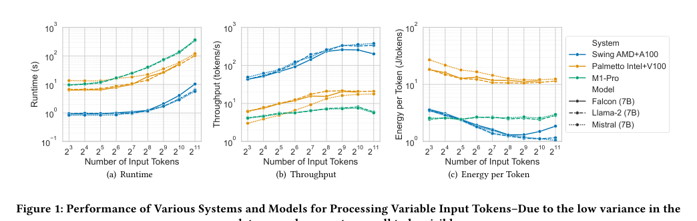
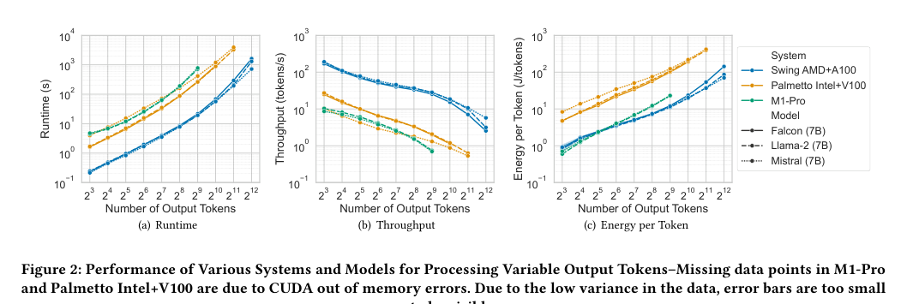
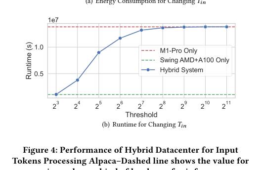
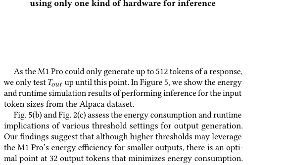

本报告由大模型自动生成，可能存在理解、归纳或数据转述错误；请以原论文为准。 Hybrid Heterogeneous Clusters Can Lower the Energy Consumption of LLM Inference WorkloadsGrant Wilkins, Srinivasan Keshav, Richard Mortier · The 15th ACM International Conference on Future and Sustainable Energy Systems · 2024 · 原文 · PDF 报告模型：gemini-3.1-pro-preview / high 本文将按照原论文的逻辑架构，为您详细解析《Hybrid Heterogeneous Clusters Can Lower the Energy Consumption of LLM Inference Workloads》（混合异构集群可降低大语言模型推理工作负载的能耗）一文。 核心背景补充与系统全貌在深入原文本之前，为了帮助理解，我们先建立本文研究所处的系统层级和核心概念（背景补充）： 大语言模型（LLM）是基于深度神经网络（通常为 Transformer 架构）构建的模型，通过海量文本训练，能够理解和生成自然语言。本文关注的是模型的推理（Inference）阶段，即模型训练完成后，接收用户输入并生成回答的实时运行过程。 在 LLM 推理中，文本被划分为词元（Token），它是模型处理的基本单位（可以理解为一个词或词的一部分）。一次完整的推理包含处理用户给定的输入词元（Input Tokens，又称 Prompt），并逐个预测生成输出词元（Output Tokens）。 支持这些计算的硬件基础是数据中心（Datacenter），它由大量计算节点组成。传统的集群通常是同构的（统一的 CPU 或统一的 GPU），而**异构集群（Heterogeneous Clusters）**则混合了不同架构的硬件（例如既有低功耗的 ARM 处理器，也有高性能的 NVIDIA 显卡）。数据在系统中的流动路径为：用户的查询请求（Query）到达调度器 -> 调度器将任务分配给某个具体的计算节点 -> 节点上的处理器将模型权重加载到显存/内存中进行矩阵乘法运算 -> 生成的词元返回给用户。 **关于跨层协同与 EDA：**需要特别指出，本文的关注点在于“数据中心/节点级别”的系统架构与任务调度，探讨的是现成商业芯片（如 Apple M1、NVIDIA A100）在不同工作负载下的宏观功耗表现。文章并未涉及芯片微架构设计与电子设计自动化（EDA）之间的跨层联系。即，文章没有将处理器的性能指标转换为 EDA 布局布线、时序分析或片上网络约束的代价模型，不涉及物理版图层面的探讨。 1 & 2. 绪论与背景 (Introduction & Background)随着 OpenAI 的 GPT-4 等大型语言模型的普及，AI 革命带来了巨大的技术进步，但也引发了对能源消耗的严重担忧。作者指出，尽管模型训练非常耗电，但从长期部署来看，在云基础设施上进行 LLM 推理所消耗的能源可能比训练高出 25 倍以上。 传统的数据中心在运行 LLM 时面临一个矛盾：一方面，数十亿参数的模型和用户对低延迟的期望要求使用高性能、高功耗的硬件（如 GPU）；另一方面，不同长度的查询任务对算力的需求是不同的，传统调度策略并未将“硬件特性”与“具体的工作负载特征”结合起来，导致能源浪费。 因此，本文最初遇到的问题背景是：如何在不严重牺牲推理性能的前提下，降低数据中心运行 LLM 时的整体能耗。作者提出的核心设计是引入一种“基于成本的调度框架”，构建混合异构数据中心。系统会感知工作负载——具体来说就是预估查询请求中输入和输出词元的数量，然后动态决定是将任务分配给高能效的低功耗处理器，还是分配给高性能的 GPU。 3. 问题表述 (Problem Formulation)为了在数学上量化这一调度策略，作者建立了一个代价模型。该模型针对托管 LLM 的混合异构数据中心，定义了一个成本函数 ，以同时兼顾能源消耗和运行时间。文中首次出现的公式如下： 在这里，作者从左至右定义了各个符号：
作者的目标是最小化所有任务分配到各个系统后的总成本，公式表示为： 这里进一步补充定义：
4. 研究方法 (Methods)为了获取上一节公式中所需的能量 和时间 ，作者进行了实际的系统基准测试（Benchmark）。 模型选择（作者设计选择）： 作者选取了三个拥有 70 亿参数（7B）的开源 LLM：Falcon、Llama-2 和 Mistral。选择 7B 级别是因为它们既具有代表性的先进架构，又能在单节点硬件上相对容易地部署。作者统一使用 Huggingface 的 Accelerate 软件库来规范跨平台的推理优化。 不同系统的能耗分析方法（测量推断逻辑）： 为了准确测量上述公式中的能量 ，作者必须面对一个硬件现实：不同厂商的芯片提供能耗数据的接口和测量机制完全不同。因此，文章针对不同硬件分别推导了能量积分公式： 1. NVIDIA GPUs: 作者使用 PyJoules 库通过 NVML（NVIDIA 管理库）接口轮询 GPU 功耗。能量计算为：
2. Apple Silicon (M1 Pro CPU/GPU):
由于苹果不提供标准 API，作者通过轮询 macOS 的底层工具
3. Intel CPUs: 通过读取 Intel 处理器的 RAPL（运行平均功率限制）寄存器，并减去空载（Idle）功率来得到净推理能耗：
4. AMD CPUs:
通过 AMDProf 记录细粒度数据，并用
以上公式 (5) 至 (8) 中出现的下标含义如下： 表示总计； 表示图形处理器； 表示中央处理器； 和 分别表示处理器插槽 0 和 1； 表示空闲状态； 表示物理核心。 5. LLM 推理在不同集群上的性能 (LLM Inference Performance)作者对比了三套硬件系统：M1 Pro（苹果轻量级低功耗芯片）、Swing AMD+A100（搭载 8 张顶级数据中心 GPU NVIDIA A100）和 Palmetto Intel+V100（搭载 2 张上一代 NVIDIA V100 GPU）。 实验设计与系统约束： 作者进行了控制变量实验：一是固定输出词元为 32，变化输入词元（从 8 增加到 2048）；二是固定输入词元为 32，变化输出词元（从 8 增加到 4096）。为了保证测试的标准化，作者在软件层面强制禁用了 KV Cache（键值缓存）重用。 在实验中触发了真实的硬件物理约束：当输出词元超过 512 时，M1 Pro 遭遇严重的运行时间惩罚；当输出词元超过 1024 或 2048 时，V100 显存不足（OOM错误）导致崩溃。 核心实验现象与图表解释： 通过分析论文的数据表现（对应原论文图 1 和 图 2）：  
6. 能源最优的混合数据中心 (Energy-Optimal Hybrid Datacenter)基于上述单机测试结果，作者引出了本文最核心的设计：由于 M1 Pro 在处理小任务时能效极高，而 A100 在处理大任务时能效更好，如果我们构建一个混合数据中心，设定一个截断阈值（Threshold），按任务长短进行分流，就能达到总体节能的目的。 为了寻找最优阈值，作者采用了基于真实数据的仿真（Simulation）。他们假设当前任务分布与著名的微调数据集 Alpaca 中的 5.2 万个提示词的长度分布一致（原文未证实真实 LLM 用户的输入完全服从该分布，这是作者做出的关键假设与局限）。 输入词元阈值分析公式： 作者沿用之前的记号，设定输入分流阈值为 ，并定义仿真总能耗公式：
同样地，对于输出词元的生成，作者设定了阈值 ，并定义了结构完全相同的输出能耗模型公式： 符号沿用上式逻辑，分别代表输出总能耗 （单位：原文未说明）、输出阈值 （单位：原文未说明）、输出长度索引 （取值范围：从 到 ）、最大输出长度 （单位：原文未说明）、输出长度频率 （单位：原文未说明）以及对应的单词元能耗 和 （单位：原文未说明）。 以上公式 (9) 和 (10) 中出现的下标含义如下： 表示总计； 表示输入； 表示输出； 表示 M1 Pro 系统； 表示 A100 GPU 系统。 仿真结果（对应图 4 和 图 5）： 通过代入公式计算不同阈值下的总能耗，结果呈现一条明显的 U 型曲线。作者发现，当设定 且 时，能耗达到最低点。与将所有任务强行分配给单一硬件（或不感知工作负载的基准线）相比，这种分流策略将总能耗降低了 7.5%。   权衡与代价： 作者在此明确指出，这种优化是牺牲了部分运行时间（Runtime）换来的。因为对于那些刚好低于阈值的小任务，M1 Pro 虽然极其省电，但其绝对处理速度仍然不如 A100。因此，整体系统的平均响应时间变长了。 7 & 8. 相关工作与结论 (Related Work & Conclusions)在相关工作中，作者梳理了前人的研究，指出以往对深度学习数据中心调度的研究往往只关注在同构 GPU 集群内进行功耗优化，缺乏对完全异构（如 CPU/SoC 与顶级 GPU 混搭）节点在特定 LLM 工作负载下的真实能耗分析。 贯穿全文的主线与局限总结： 本文的研究主线非常清晰：由于 LLM 推理极度耗电且任务长度不一（遇到问题） -> 作者测量了从轻量级 SoC 到顶级 GPU 的真实能耗表现，发现它们在不同任务规模下各有优劣（获取数据支撑） -> 作者提出根据“输入/输出词元数量”这一关键指标进行请求路由分发的调度框架（提出策略） -> 通过数据集仿真证明该策略能降低 7.5% 的能耗（验证结果）。 关键局限性提醒：
|